SLG 主界面 Sprite 还原方案综合报告
本报告整理当前项目中已经尝试过的 UI sprite 还原路线，重点说明每个方案的目标、做法、产物、指标、优缺点和当前结论。 指标采用与 source crop 的 mean abs RGB delta，数值越低越接近源图；它不是最终美术评分，但足够用于判断路线是否值得继续投入。
结论摘要
能把扁平 AI UI 图转成 Sprite Plan、manifest、Layer IR、Layout IR、独立 PNG、回贴对比，工程链路可复盘。
纯 AI 重新生成会发生视觉漂移，按钮、资源条、文字、阴影和材质都不能稳定复刻源图。
source-preserving visual state sprite 最接近效果图，但会烘焙文字、icon 和状态，复用性较低。
SAM/rembg 用于可见前景 mask 和 alpha refine，LaMa 只处理少数底板遮挡洞，shadow 交给人工确认。
对当前项目来说，结论不是“ui-sprite-regenerator 不可用”，而是要区分两个目标： 先像效果图应该走视觉态提取；长期可编辑复用应该走工程拆层。 两条路线不要强行合并，否则会同时损失视觉还原和工程可控性。
方案矩阵
| 方案 | 本项目产物 | 优点 | 缺点 | 当前结论 |
|---|---|---|---|---|
| 全屏独立 sprite 重生成 | slg_main_single_sprites |
结构完整，Text Node、布局、层级、回贴链路齐全。 | 整体材质、icon、字体、描边和光影明显漂移。 | 可做 mock 不适合作为高保真终点。 |
| crop proxy 上限验证 | slg_main_fidelity_experiment |
低成本证明哪些局部如果保留源图像素会明显变好。 | proxy 是源图 crop，不是合格 sprite，不能作为最终资产。 | 适合作诊断 只能作为上限参照。 |
| 整按钮真实生成 | slg_main_build_nav_button_realgen |
减少多层组装错位，产出透明组合 sprite。 | 模型把按钮重画成更厚、更标准的大按钮，delta 反而更差。 | 不推荐推广 单次 realgen 不接近上限。 |
| 按钮拆层真实生成 | slg_main_build_nav_button_decomposed |
工程边界合理，文字保留为 Text Node。 | 素材本身继续漂移，组合后没有更像源图。 | 结构正确 不能单独解决高保真。 |
| 按钮底板 cleanup / inpaint | slg_main_build_button_bg_cleanup |
能得到干净透明底板。 | 模型按 UI 先验补全，重画成标准模板。 | 不作为主线 可做小实验。 |
| 顶部资源条组合 realgen | slg_main_top_resource_strip_realgen |
不同组件类型上略有改善。 | spacing、icon identity、条宽和颜色被重新设计。 | 收益有限 不改变总体判断。 |
| 整组件视觉态提取 | slg_main_build_nav_button_visual_extract |
使用源图像素和非矩形 mask，视觉最接近效果图。 | 文字、icon、状态被烘焙，复用性和本地化差。 | 高保真优先推荐 标记为 visual state。 |
| 手工 layered source extract | slg_main_build_nav_button_layered_source_extract |
保留图层关系，明显优于纯生成。 | 手工 mask 粗糙，遮挡底板只能近似补洞。 | 方向成立 需要工具增强 mask。 |
| SAM/rembg 分割与 alpha refine | slg_main_build_nav_button_sam_rembg_extract |
前景 mask、边缘和视觉态 alpha 显著改善。 | 不能恢复被遮挡的隐藏图层。 | 值得接入 用作 layer-first 辅助。 |
| LaMa 小范围补洞 | slg_main_build_nav_button_lama_inpaint_extract |
对 button_bg 遮挡洞有小幅改善。 | 仍是猜测隐藏像素，依赖 mask，环境需隔离。 | 可作为候选 不做默认整组件重画。 |
| hammer shadow 独立层 | slg_main_build_nav_button_shadow_layer_extract |
验证了 shadow 归属这个关键未知项。 | 自动拆 shadow 后指标略差，底板出现新伪影。 | 负向结论 shadow 标记人工确认。 |
核心数据
下表中的 delta 均为与 source crop 的 mean abs RGB delta，越低越接近源图。0.00 的 crop proxy 是源图像素贴回，不代表真实 sprite 生成能力。
| 对象 | 方案 | delta | 说明 |
|---|---|---|---|
| BUILD 按钮 | 当前独立 sprite 重建 | 45.20 | 基线，视觉差距明显。 |
| BUILD 按钮 | crop proxy 上限 | 0.00 | 源图 crop，不能作为最终 sprite。 |
| BUILD 按钮 | 整按钮真实生成 | 53.61 | 比基线更差，模型重设计。 |
| BUILD 按钮 | button_bg + hammer + badge + Text Node | 45.64 | 工程结构更好，但视觉没有提升。 |
| BUILD 按钮 | cleanup/inpaint 按钮底板 | 47.56 | 干净但风格模板化。 |
| BUILD 按钮 | visual state extract | 4.63 | 贴回当前重建底图后仍接近源图。 |
| BUILD 按钮 | manual layered + Text Node | 28.69 | 拆层后优于纯生成。 |
| BUILD 按钮 | manual layered + fixed text | 22.66 | 排除字体漂移后进一步降低。 |
| BUILD 按钮 | SAM/rembg layered + Text Node | 21.89 | mask/refine 明显改善。 |
| BUILD 按钮 | SAM/rembg layered + fixed text | 15.84 | 前景层质量提升得到验证。 |
| BUILD 按钮 | LaMa layered + Text Node | 20.67 | 相对 SAM/rembg 小幅改善。 |
| BUILD 按钮 | LaMa layered + fixed text | 14.59 | 当前工程拆层最佳指标，但仍不如视觉态。 |
| BUILD 按钮 | shadow small + fixed text | 14.71 | 自动拆 shadow 略差于 previous LaMa。 |
| BUILD 按钮 | shadow medium + fixed text | 15.33 | mask 扩大后更差。 |
| 顶部资源条 | 当前独立 sprite 重建 | 57.61 | 宽 HUD 区域基线差距大。 |
| 顶部资源条 | realgen frame + Text Nodes | 53.92 | 小幅改善，但 icon 与 spacing 漂移。 |
| 顶部资源条 | UI mask delta: 当前 / realgen | 60.78 / 58.34 | 只看 UI 区域仍只小幅改善。 |
逐项实验说明
1. 全屏独立 sprite 重生成
基线方案 目标是验证 ui-sprite-regenerator 的标准流程：Sprite Plan、manifest、Layer IR、Layout IR、独立透明 PNG、fit 回贴和 comparison。
优点
- 40 个源 sprite、61 个布局实例、40 个 Text Node，工程结构完整。
- 能区分
assets_png源素材和assets_fit_raw布局实例。 - 能输出
bbox_overlay.png、sprite_overview.png、reconstruction.png和comparison.png。
缺点
- 重新生成导致风格不一致，尤其是按钮、资源条、icon、字体和高光阴影。
- 它证明了链路可用，但没有证明视觉高保真可达。
当前结论：适合作为工程化拆分链路和 mock 资产生成基线，不应承诺“像原图”。

2. crop proxy 上限实验
诊断实验 目标是回答一个低成本问题：如果直接把源图局部贴回，当前差距能降低多少。
优点：快速证明“保留源图像素”对视觉相似度非常有效，也说明问题不是只有红框局部，而是整体材质和上下文一致性。
缺点：proxy_crops_not_final_sprites 是矩形 crop，不是最终 sprite，不能直接进入工程资产。
当前结论：保留源图像素是高保真上限，但必须换成非矩形 mask / 分层提取，不能停在 crop。
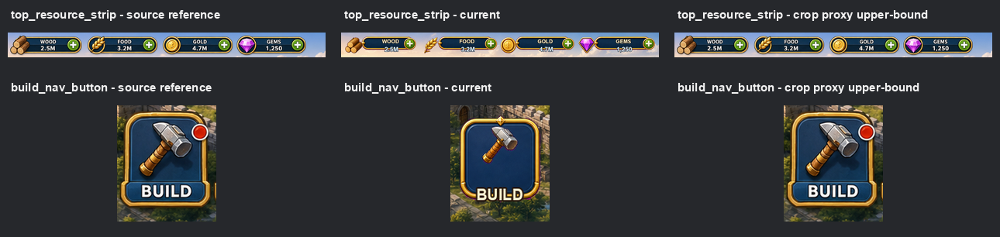
3. BUILD 整按钮真实生成
负向结果 目标是验证“组合控件 realgen”能不能接近 crop proxy 的上限。
| 版本 | delta | 观察 |
|---|---|---|
| 当前独立 sprite 重建 | 45.20 | 基线。 |
| crop proxy | 0.00 | 上限参照，不是 sprite。 |
| 整按钮 realgen | 53.61 | 更厚重、更规整，文字和 hammer 占比漂移。 |
优点：产出了透明组合 sprite，避免了内部层级错位。
缺点：AI 把组件重新设计成标准 UI 按钮，视觉比基线更远。
当前结论：整组件真实生成不能作为高保真主线，至少 BUILD 按钮不成立。

4. BUILD 拆层真实生成
结构正确但相似度不够 目标是按 button_bg + hammer_icon + badge_dot + Text Node 做更工程化的拆分。
| 版本 | delta | 观察 |
|---|---|---|
| 当前独立 sprite 重建 | 45.20 | 基线。 |
| 整按钮 realgen | 53.61 | 组合重画更差。 |
| 拆层 realgen + Text Node | 45.64 | 几乎没有提升。 |
优点：文字可编辑，组件边界更符合工程复用。
缺点：底板、锤子、红点仍然被模型重新诠释，素材自身漂移没有消失。
当前结论：拆层边界是对的，但“拆得更工程化”不等于“更像源图”。
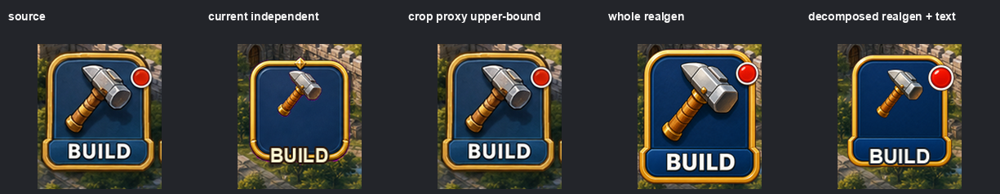
5. BUILD 按钮底板 cleanup / inpaint
模板化漂移 目标是给模型源图局部参考，让它只清理按钮底板，复用已有 hammer、badge 和 Text Node。
inpaint 的基本输入通常是原图局部、需要被移除或补全的 mask，以及可选提示词。模型会根据 mask 周围的像素连续性、材质规律和训练得到的 UI 先验，合成一块“看起来合理”的新内容。
这类方法适合去掉小面积遮挡、污点、文字或前景物，但它并不知道被锤子、红点、文字遮住的真实按钮底板长什么样。对游戏 UI 来说，模型很容易把局部按钮补成更规整、更高清的标准模板，所以会出现“资产变干净了，但不像源图”的结果。
| 版本 | delta | 观察 |
|---|---|---|
| 拆层 realgen + Text Node | 45.64 | 上一轮基线。 |
| cleanup bg + 复用 icon/Text | 47.56 | 底板干净，但更不像源图。 |
优点：能生成工程上干净的透明按钮底板。
缺点：被遮挡区域没有真实图层，模型会按自己的 UI 先验补全，细节密度和比例漂移。
当前结论：局部 crop + prompt 的 cleanup 不是高保真保证，不建议在同一按钮上继续堆 prompt。
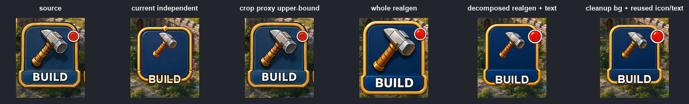
6. 顶部资源条组合 realgen
不同组件类型验证 目标是排除“问题只发生在 BUILD 按钮”这一种可能，换宽 HUD 资源条测试。
| 版本 | 全 crop delta | UI mask delta | 观察 |
|---|---|---|---|
| 当前独立 sprite 重建 | 57.61 | 60.78 | 基线差距大。 |
| realgen frame + Text Nodes | 53.92 | 58.34 | 略好，但 spacing 和 icon identity 漂移。 |
优点：在宽 HUD 上有一点收益，能保持动态文字为 Text Node。
缺点：资源条被重新排版，宝石和金币等 icon 身份发生变化，条宽也变得更统一。
当前结论：组合控件不是完全无效，但收益太小，不足以作为全屏主线。

7. BUILD 整组件视觉态提取
最接近源图 目标是不用 AI 重画，而是保留源图像素，用非矩形 alpha mask 提取视觉态 sprite。
这条路线不让模型重新画按钮，而是用语义 mask / alpha mask 把按钮从源图中抠出来。输出仍然是透明 PNG，但按钮内部像素来自源图本身，因此不会产生重新生成带来的材质、色彩、笔触和字体漂移。
它的代价也来自同一个原因：因为保留的是“当前视觉状态”，所以文字、锤子、红点和局部阴影会一起被烘焙进 sprite。它解决的是视觉接近度，不解决长期工程复用和多状态编辑。
优点：最大程度避免生成模型重画，视觉效果接近源图，不是矩形 crop，输出透明 PNG。
缺点：锤子、红点、文字和当前状态被烘焙在一起，不适合多语言、状态切换和细粒度复用。
当前结论：如果目标是“ui-sprite-regenerator 生成的图要和效果图一样”，这是低复杂度下最值得走的路线，但必须标记为 visual_state_sprite。
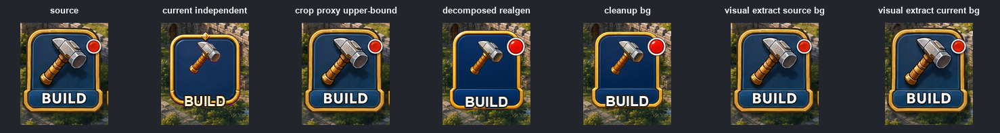
8. BUILD layer-first source extract
分层方向成立 目标是按图层关系拆出 button_bg、hammer_icon、badge_dot、Text Node，并保留 reference package。
这条路线的重点不是先切 bbox，而是先定义图层语义：哪些像素属于底板，哪些属于 icon、badge、文字或 shadow。前景层能通过 mask 直接保留源图可见像素；底板层则需要用 exclude mask 移除子元素，再对被遮挡的小洞做局部补全。
它比纯 AI 生成更稳定，因为大部分可见像素来自源图；但它仍不是自动 PSD。只要某个底板区域在原图中从未可见，流程只能近似补洞，无法证明补出来的是原始设计稿中的真实像素。
| 版本 | delta | 观察 |
|---|---|---|
| visual state extract | 4.63 | 视觉上限更高，但不可编辑。 |
| layered source extract + Text Node | 28.69 | 比纯生成明显好。 |
| layered source extract + fixed text | 22.66 | 说明文字渲染也是显著误差来源。 |
优点：同时保留工程层结构和源图像素，且保存 crop、target mask、exclude mask，后续可继续增强。
缺点：手工 mask 粗糙；button_bg 被文字、锤子、红点遮挡的隐藏像素无法从单张扁平图真实恢复。
当前结论：这条路线值得保留，但要引入 SAM/rembg 改善 mask，底板补洞单独处理。
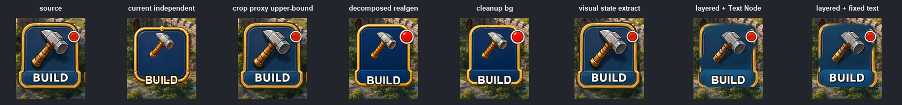
9. SAM/rembg 分割与 alpha refine
推荐接入工程拆层 目标是验证第三方工具是否能降低手工 mask 粗糙度。
SAM / SAM2 是 promptable segmentation 工具：给它点、框或区域提示后，它会根据图像特征输出候选 mask。它擅长把源图中已经可见的锤子、红点、文字或按钮轮廓分出来，因此比手工画 mask 更稳定。
rembg 这类工具更接近 foreground matting / background removal：它不决定工程语义，而是根据图像内容估计前景 alpha，能改善边缘锯齿、软边和半透明过渡。当前项目里更适合作为 SAM mask 后的 alpha refine。
这两类工具的共同边界是：它们只看得到源图中的可见像素。被 icon 或文字遮住的底板不存在于输入图里，所以 SAM/rembg 不能恢复隐藏底板，也不能自动判断 shadow 应该属于按钮底板还是锤子层。
| 版本 | delta | 说明 |
|---|---|---|
| manual layered + Text Node | 28.69 | 上一轮手工 mask。 |
| SAM/rembg layered + Text Node | 21.89 | 明显改善。 |
| manual layered + fixed text | 22.66 | 上一轮排除 Text Node。 |
| SAM/rembg layered + fixed text | 15.84 | 前景层 mask/refine 改善成立。 |
| SAM/rembg visual-state diagnostic | 10.24 | 整组件视觉态诊断。 |
| visual-state alpha mask delta | 0.97 | 只看 alpha 覆盖区域几乎贴近源图。 |
优点：SAM2 对 hammer、badge、label 等可见前景层帮助明显；rembg 适合作 alpha/edge refine。
缺点：SAM/rembg 只处理可见像素，不知道工程语义，也不能恢复被遮挡的底板。
当前结论：值得接入 layer-first workflow，但不能宣传成自动 PSD 化。
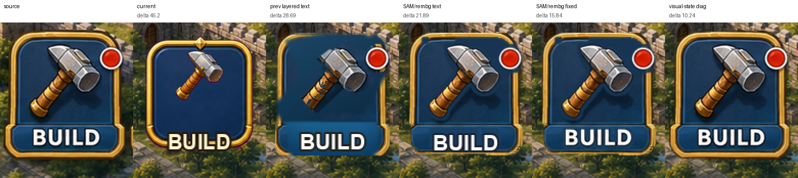
{kind=link}
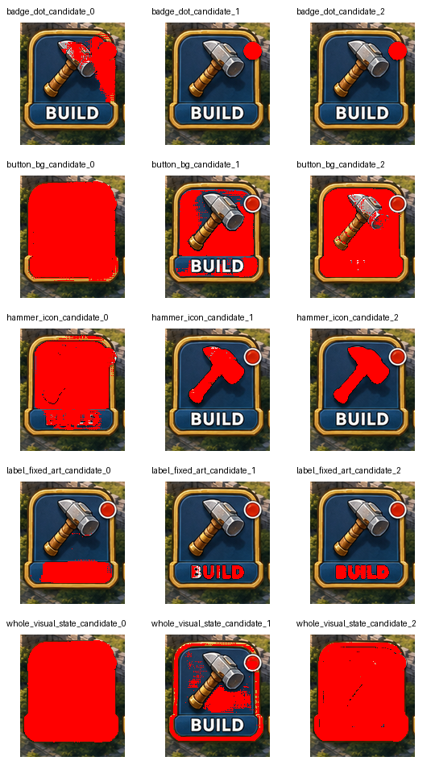
{kind=link}
10. LaMa 小范围 inpaint 补洞
小幅改善 目标是在 SAM/rembg 已经处理好前景的基础上，只对 button_bg 的遮挡洞做 LaMa 补全。
LaMa 属于 inpainting 模型。它接收原图和 mask，把 mask 内的区域当成缺失内容，再利用周围颜色、纹理、结构和模型先验生成补全结果。相对简单的区域采样或模糊填充，LaMa 往往能产生更自然的连续纹理。
对当前 UI 拆层来说，LaMa 的合理用法是“只补 button_bg 上被前景层挖掉的小洞”。它不应该接管整个按钮，也不应该重画完整组件。mask 越大，模型越容易重新设计金边、材质和高光；mask 越小，则可能残留锤子阴影或文字痕迹。
因此 LaMa 的定位是困难底板的局部补洞候选，而不是源图图层恢复器。它的结果需要和 visual-state 上限、SAM/rembg 基线一起对比，不能只看补出来是否干净。
| 版本 | Text Node delta | fixed text delta | 观察 |
|---|---|---|---|
| SAM/rembg | 21.89 | 15.84 | 上一轮基线。 |
| LaMa variant B | 20.67 | 14.59 | 小幅改善。 |
| visual-state diagnostic | 10.24 | 10.24 | 仍明显更好。 |
优点：能让底板遮挡洞比区域采样更自然，适合困难底板局部处理。
缺点：仍是根据周围像素猜 hidden layer；mask 稍微扩大就可能重画金边和材质。安装时会拉低 Pillow/Numpy，后续应独立环境运行。
当前结论：LaMa 可保留为候选工具，但只用于小范围补洞，不作为默认整组件重画方案。
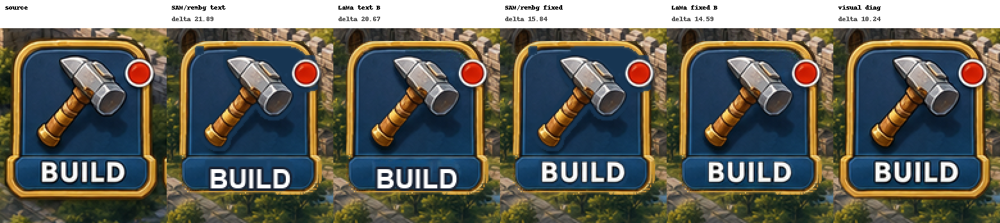
{kind=link}
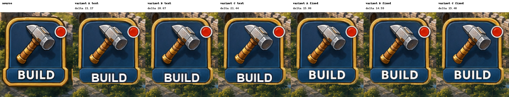
{kind=link}
11. hammer shadow layer 归属实验
负向边界 目标是验证 hammer_shadow 是否应该从 button_bg 中拆出，成为 hammer stack 的独立层。
投影通常是光照和接触关系形成的半透明暗部，它没有像 icon 那样明确的物体边界。用阈值、暗部差分或 segmentation 去抓 shadow 时，很容易把按钮底板自身的暗纹、材质凹陷或边缘阴影一起抓进去。
一旦把 shadow 也从底板 mask 掉，LaMa 需要补的洞会变大，反而可能在底板上生成新的伪影。把 shadow 作为单独半透明层回贴，也很难精确复现源图里的软边、接触阴影和局部材质变化。
所以这个实验的负向结果是合理的：shadow 归属应该进入人工确认或依赖 PSD/人工修图，而不是作为默认自动拆层规则。
| 版本 | Text Node delta | fixed text delta | 观察 |
|---|---|---|---|
| previous LaMa | 20.67 | 14.59 | 上一轮最佳工程拆层。 |
| shadow small | 20.80 | 14.71 | 略差。 |
| shadow medium | 21.42 | 15.33 | 更差，底板伪影增加。 |
| visual-state diagnostic | 10.24 | 10.24 | 仍是视觉上限。 |
优点：明确验证了 shadow 归属，不再停留在猜测。
缺点：自动 shadow mask 难以只抓投影；拆掉 shadow 后 LaMa 需要补更大的洞，反而引入底板伪影。
当前结论：不要默认自动拆 shadow。工程拆层时把 shadow 归属标记为 needs_manual_shadow_review；没有 PSD 或人工修图时，宁愿保守。
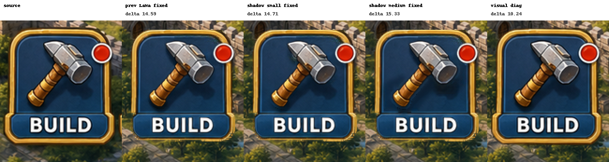
{kind=link}
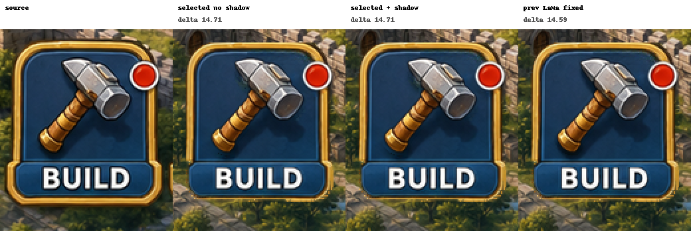
{kind=link}
当前方案能做、不能做、未知
能做到
- 锁定布局位置、尺寸、层级和 Text Node。
- 输出可审计的 Sprite Plan、manifest、Layer IR、Layout IR。
- 生成透明独立 PNG，并通过
assets_fit_raw回贴验证。 - 把动态文字、数字、按钮文案保留为可编辑节点。
- 用 source-preserving mask 生成接近效果图的视觉态 sprite。
- 用 SAM/rembg 改善可见前景层 mask 和 alpha 边缘。
确定做不好
- 不能靠 prompt 稳定复刻源图的精确笔触、材质和光影。
- 不能从单张扁平图恢复被遮挡的真实隐藏图层。
- 不能同时最大化“细粒度复用”和“几乎等同源图”。
- SAM/rembg 不能替代图层语义判断。
- LaMa 不能保证恢复真实底板，只能生成合理近似。
- shadow 不能在当前自动规则下可靠拆出。
仍需确认
- 哪些组件应该使用视觉态，哪些组件值得工程拆层。
- LaMa 在更多底板上的稳定收益是否足够。
- 是否需要九宫格、PSD、人工修图或设计源文件介入。
- Text Node 的字体、描边、投影如何与源图更接近。
- 资源条这类宽 HUD 是否需要人工确定 slot 结构。
最核心的物理限制是：AI 效果图只有一张扁平图片。它不是 PSD、Figma 或引擎 prefab。 所以遮挡背后的像素、真实图层归属、可编辑文本样式和九宫格拉伸规则，都不能完全靠自动生成推断出来。
当前项目建议
推荐路线：双轨输出
| 轨道 | 适用目标 | 具体做法 | 验收重点 |
|---|---|---|---|
| 视觉态 sprite | 先让 UI 看起来像效果图，位置可以后续手调。 | 对关键控件使用 source-preserving 非矩形 mask 提取，允许烘焙状态和固定文字。 | 像源图、边缘干净、明确标记不可长期复用。 |
| 工程拆层 sprite | 需要动态文字、本地化、状态变化和长期复用。 | SAM/rembg 做前景 mask/refine，Text Node 保持可编辑，少数底板洞用 LaMa 或人工修图。 | 图层关系正确、IR 完整、遮挡和 shadow 均记录 limitation。 |
| 人工/PSD 化资产 | 要求高保真且可编辑。 | 由人工修图或源设计文件补齐隐藏底板、阴影、九宫格、字体样式。 | 能回贴接近源图，同时保留可复用层。 |
不建议继续投入的方向
- 不要继续在 BUILD 按钮上单纯堆 prompt。整按钮、拆层 realgen、cleanup/inpaint 都没有接近上限。
- 不要把 crop proxy 当最终 sprite。它只能证明上限，不能进入工程资产。
- 不要默认自动拆 shadow。当前实验证明会略微变差，应改成人工确认项。
- 不要把 SAM/rembg/LaMa 宣传成自动 PSD 恢复。它们分别解决 mask、alpha、补洞的一部分问题。
下一步低复杂度建议
- 为关键控件先生成
visual_state_sprite，满足“看起来像效果图”的短期目标。 - 只对需要可编辑的控件补
engineering_layers，不要全屏强拆。 - 把 SAM/rembg 固化成 layer-first 的 mask/refine 步骤。
- LaMa 只作为底板遮挡洞的候选工具，并记录每个洞的 limitation。
- shadow、九宫格、字体样式进入人工确认清单，避免自动规则越做越复杂但收益很低。
examples/output/slg_main_single_sprites/examples/output/slg_main_fidelity_experiment/examples/output/slg_main_build_nav_button_realgen/examples/output/slg_main_build_nav_button_decomposed/examples/output/slg_main_build_button_bg_cleanup/examples/output/slg_main_top_resource_strip_realgen/examples/output/slg_main_build_nav_button_visual_extract/examples/output/slg_main_build_nav_button_layered_source_extract/examples/output/slg_main_build_nav_button_sam_rembg_extract/examples/output/slg_main_build_nav_button_lama_inpaint_extract/examples/output/slg_main_build_nav_button_shadow_layer_extract/